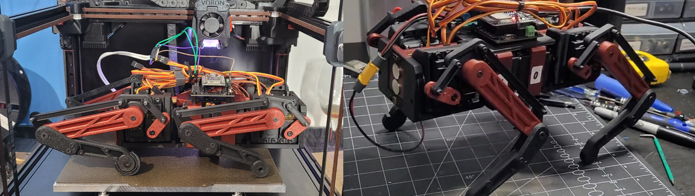
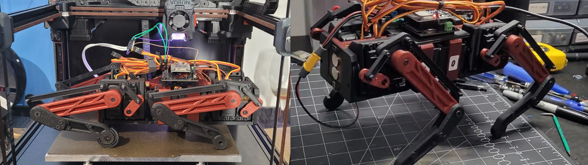

Robot Dog V2 - "Clifford"
 

What's different
Clifford is the second interation of my robot dog project. Compared to the first version, "Goddard", Clifford is significantly more compact and overall smaller, making it relatively stronger. It uses a linkage for actuating the lower limb of each leg, which relocates the heavy servo to the body, where it is essentially stationary, rather than being in the elbow, which keeps the legs much lighter.
design and construction
With 3D printing as the primary mode of construction, all of the parts were carefully designed with additive manufacturing in mind. All of the parts can be 3D printed on an FDM printer without supports and with minimal post-processing, and use brass heat-set threaded inserts for fastening. These put less stress on the plastic and provides a thread more resistant to stripping, which allows it to be dissasembled/reassembled repeatedly throughout the design process and to be held together more tightly than with plastic threads.
The body is designed to be as compact as possible while housing all 12 servos and remaining sufficiently stiff. For ease of printing, the body is split into several smaller parts rather than one large print. To keep it stiff, two pieces of brass tubing run the entire length of the body, and provide stiffness as well as an anchoring point to the individual body components. This was very effective and there is little to no flex in the body, and adds just a few dozen grams to the weight of the robot.
electronics and programming
The robot is built around an ESP32 MCU with a custom PCB for distributing power to all of the servos. It uses a standard RC transmitter and receiver for remote control and is powered by a 2S LiPo. All the electronics are housed on top of the body, which will be enclosed once it's in its final state.